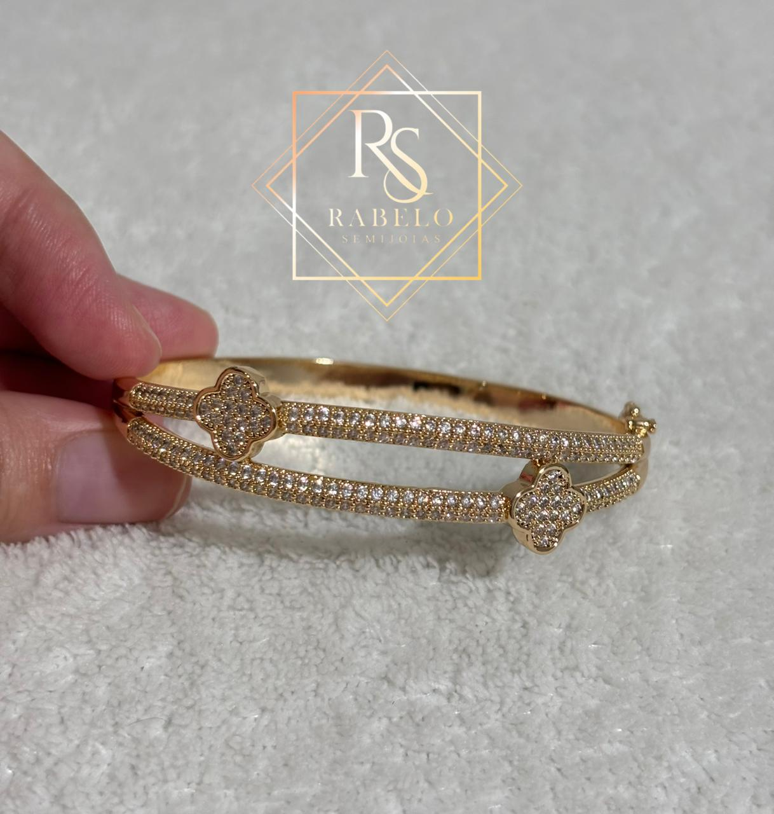
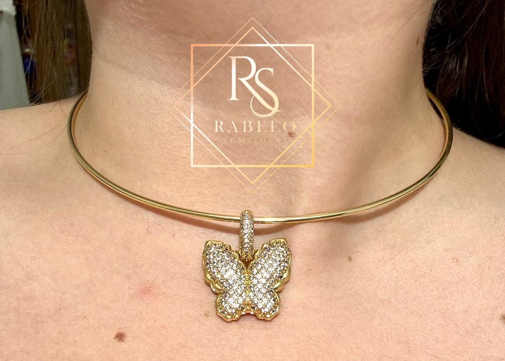
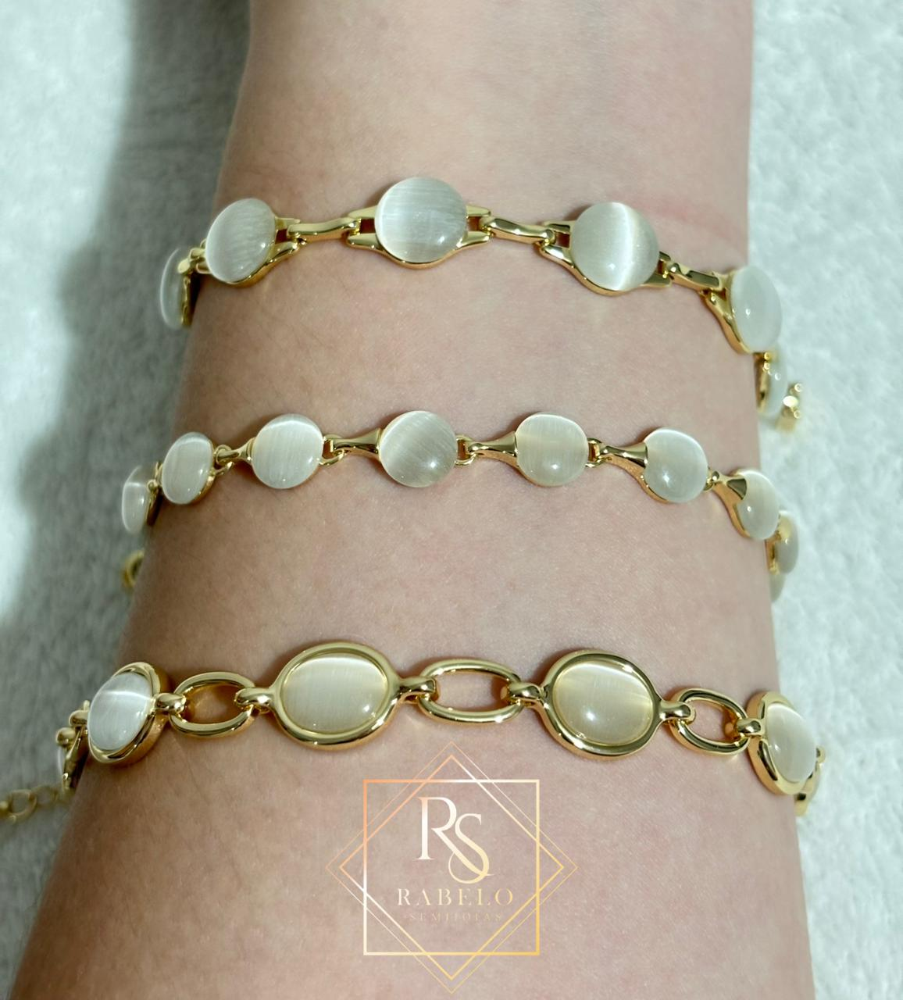
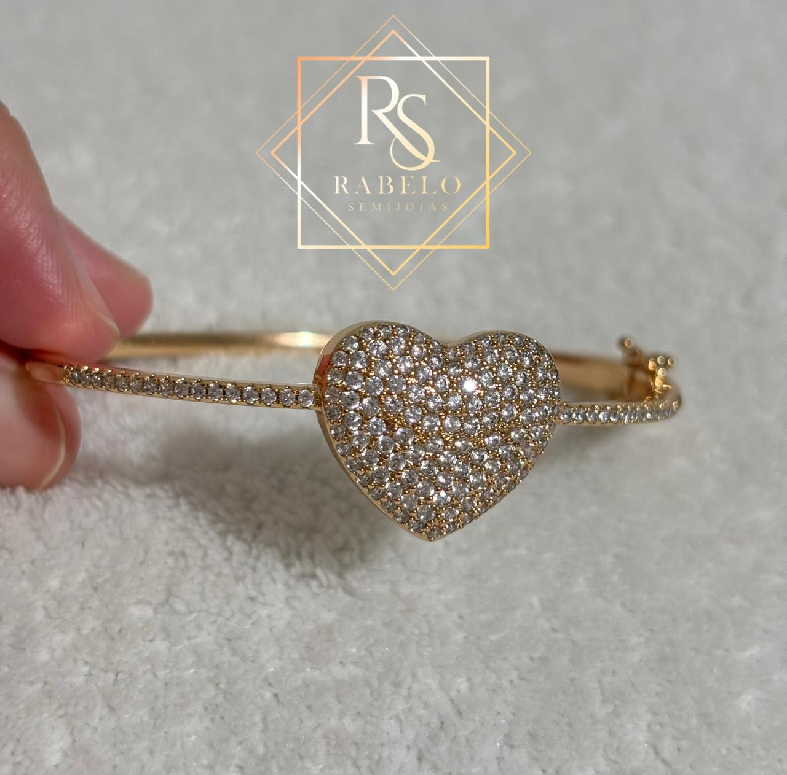

Sobre mim
Meu nome é Bárbara Victória Rabelo Mendes, tenho 21 anos, nasci em 2 de fevereiro de 2004, em Ananindeua no Estado do Pará. Até os meus 10 anos de idade, morei em Marapanim-Pará. Atualmente moro em Castanhal-Pará com minha mãe, meu irmão e minha gata. Já tive experiências com outros tipos de trabalho, os quais eu vou colocar abaixo. Hoje sou empresária e dona do meu próprio negócio, tenho minha loja on-line, onde vendo semijoias, roupas de grife, bolsas, relógios, dentre outros. Estou também reformando meu ponto comercial em Marapanim, onde funcionará minha loja física.
Aos 17 anos recebi minha primeira proposta de emprego, era para trabalhar com meu pai em uma ação social no Sudoeste do Pará. Minha função era administrativa e verificar DNP (distância naso-pupilar). Depois, trabalhei na ótica dele, onde aprendi a usar autofacetadora e montar óculos de grau e sol. Sempre tive facilidade para aprender coisas novas, seja um idioma, um assunto da faculdade ou do trabalho.
Experiências profissionais
- Auxiliar Administrativo
Baruch Soluções – Santarém e Belém – Pará
Atuação na área administrativa e organizacional em ações sociais, levando atendimentos médicos, emissão de RG, óculos de grau, entre outros, para os habitantes locais. - Voluntária Civil
Secretaria de Estado de Segurança Púlica e Defesa Social - SEGUP – Pará
Atuação na Diretoria de Políticas de Segurança Pública e Prevenção Social – DPS, auxiliando administrativamente na produção e correção de documentos oficiais, cálculo de diárias, planilhas, atividades externas (campanhas em estádios, escolas e praças, objetivando a importunação sexual contra a mulher, emissão de RG) participação em reuniões de alinhamento do eixo Círio, Pró Mulher Pará, dentre outros tópicos que a Diretoria disponha.
Formação
- Bacharelado em Optometria até o 3º semestre (2022 - 2023) – Faculdade Cruzeiro do Sul - Belém, PA
- Tecnólogo em Análise e Desenvolvimento de Sistemas (Cursando atualmente o 2º semestre) – Faculdade Estácio de Castanhal, PA
- Pacote Office – Fundação Bradesco
- Curso de inglês – English Backstage (2023 - atual)
- Espanhol intermediário (01/2014 - 12/2019) – Colégio Impacto - Belém, PA
Contatos
E-mail pessoal: babimendes001@gmail.com
E-mail da loja: rabelo.semijoias001@gmail.com
Telefone: (91) 9 8157-6046
Publicidade
Segue abaixo algumas das imagens de produtos que tenho à pronta-entrega:



